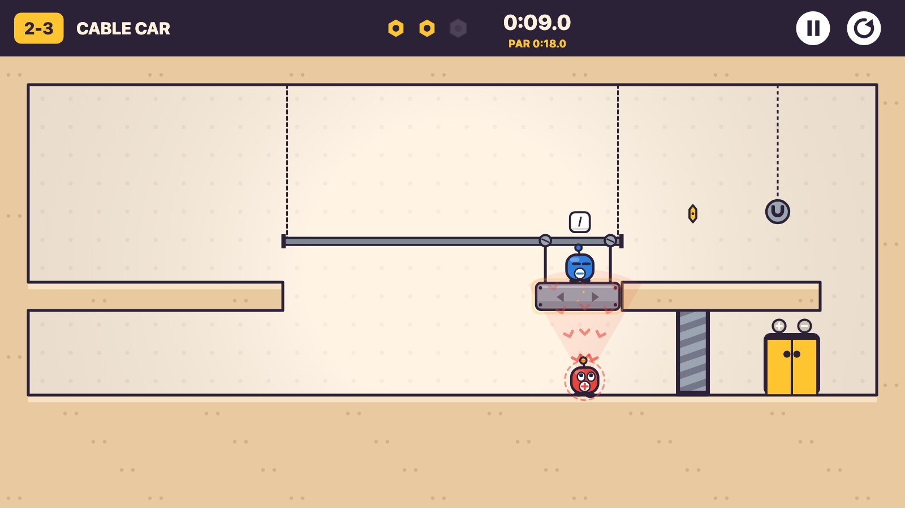
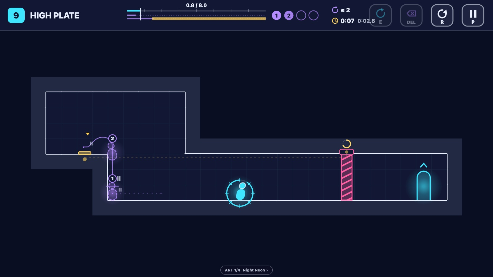
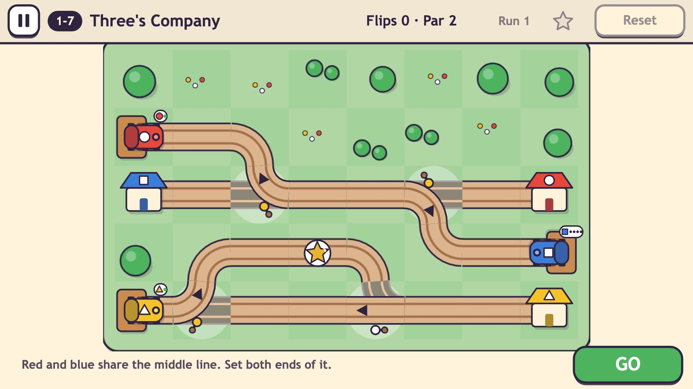

Internal review
Coolmath Pilot
Magnet Twins, Echo Steps, Tiny Trains
Context
12 original HTML5 game concepts for Coolmath, ranked by fit and built in parallel by two people since October 2026.
| Game | Brief | Design | Slice | Content | Polish | Done |
|---|---|---|---|---|---|---|
| Magnet TwinsRank 1 · 13 of 30 levels | ||||||
| Echo StepsRank 6 · 10 of 36 rooms | ||||||
| Tiny TrainsRank 5 · 10 of 50 levels |
Stage from each game's meta.json. Tiny Trains is a playable prototype built from a draft design document; its design review is still open.
01 Co-op puzzle platformer
Two robots share one keyboard. One pulls metal, the other pushes it. Every level needs both.

Click the game to play.Playing. Esc returns to the slides.
Open in a new tab01 Status
01 Art direction
02 Time-loop puzzle platformer
Every attempt leaves an echo that replays what you did. You solve each room with your past selves.

Click the game to play.Playing. Esc returns to the slides.
Open in a new tab02 Status
02 Art direction
03 Routing puzzle
Flip the track switches so every colored train reaches its own station without crashing.

Click the game to play.Playing. Esc returns to the slides.
Open in a new tab03 Status
03 Art direction
Next steps
Decisions
| # | Decision | Proposal | Source |
|---|---|---|---|
| 1 | Art direction for each game | Pick one option per game from the comparison. It becomes the default and goes into the design document. | All three devlogs |
| 2 | The other art styles | Drop them, or keep them as unlockable liveries. Decide if the style switcher stays in release builds. | Tiny Trains, Echo Steps devlogs |
| 3 | Coolmath SDK, ad breaks, branding, size limit | Ads only between levels, never mid-level. Aim for under 1 MB per game. | Open question in all three GDDs |
| 4 | GameAnalytics keys | One key pair per game, in a config file. | Open question in all three GDDs |
| 5 | Tiny Trains: does a hint cost the par star? | Yes. It keeps par meaningful; revisit with hint data. | Tiny Trains GDD |
Questions and feedback welcome. Everything shown today is playable in the browser.
Arrows or Space to move · F full screen · P open this game · Esc exit